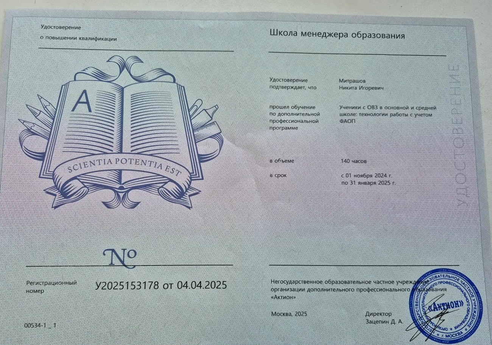
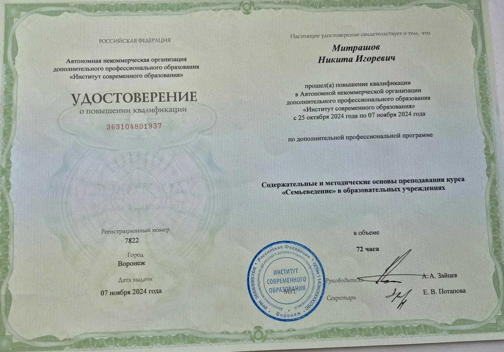
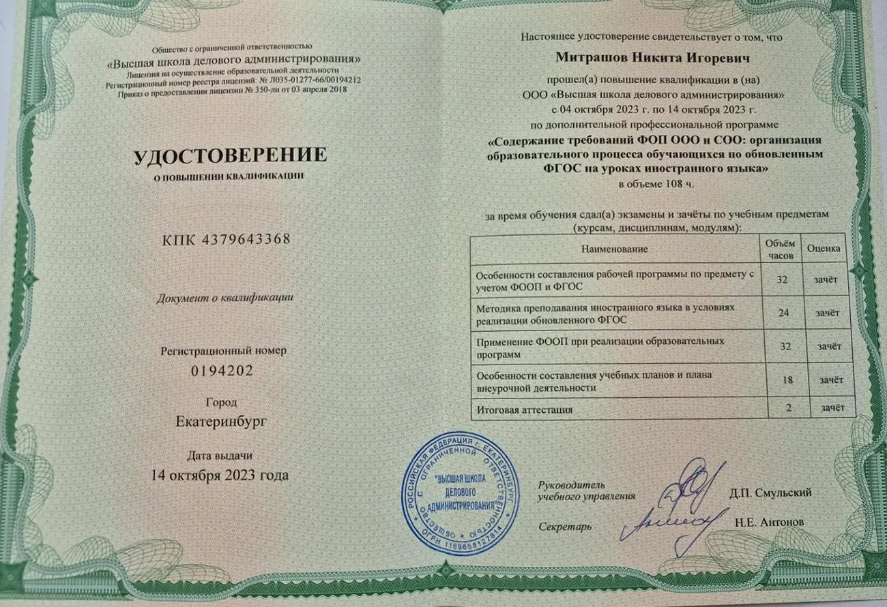
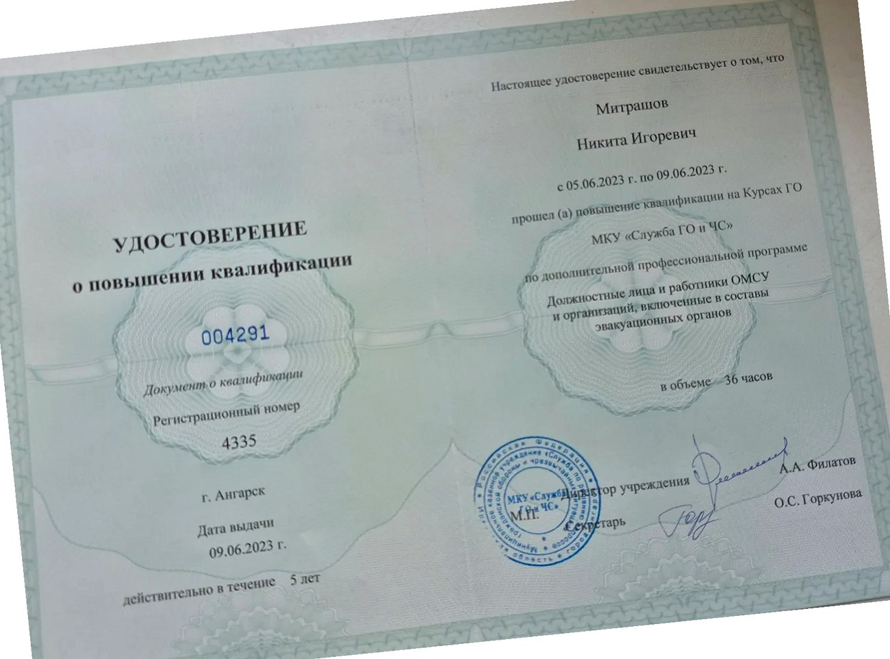
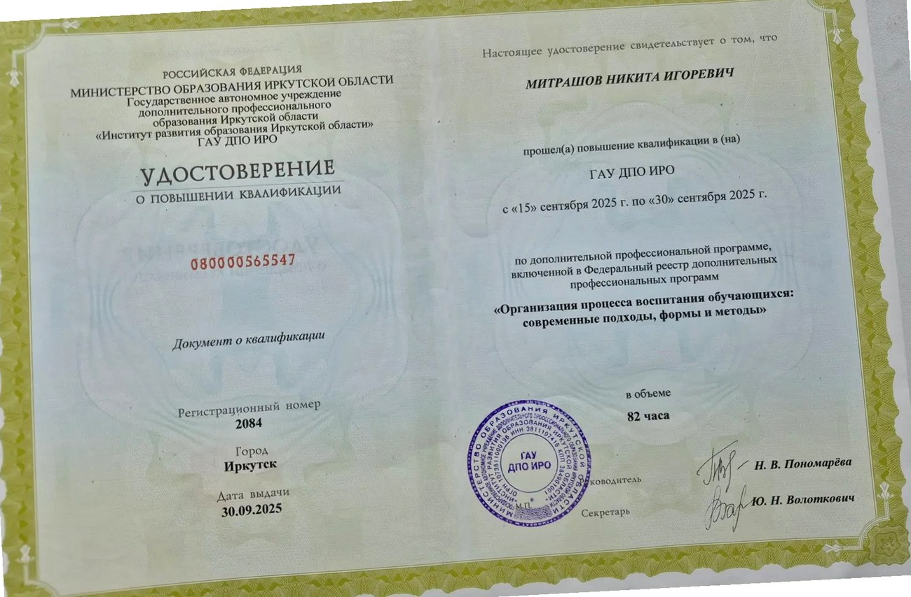
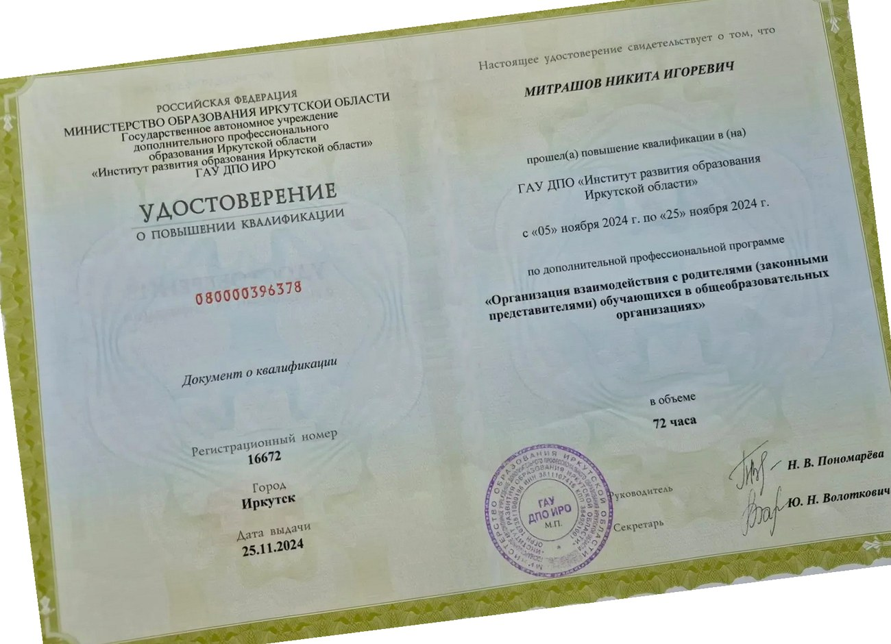

Главная / Обо мне
Обо мне
Как я работаю
Три года в школе, две специальности и привычка проверять любую идею на уроке.
Я преподаю английский язык в школе третий год. За это время сложилась простая идея: язык держится не на правилах, а на привычке говорить. Поэтому на уроках много диалогов, ролевых ситуаций и маленьких проектов, где нужно объяснить, договориться, рассказать о себе.
Мне важно, чтобы ученик не боялся ошибаться. Ошибка на уроке это нормальная часть работы, а не повод для оценки. Такой подход даёт результат: дети начинают говорить, выходят на олимпиады и конкурсы, а потом пишут из поездок короткие заметки на английском.
Отдельное направление моей работы это цифровые проекты для уроков. Четыре тренажёра и клуба собраны так, чтобы учитель мог открыть их на уроке или отправить ссылку ученикам.
- Дата рождения
- 26 июля 2000 года
- Предмет
- Английский язык
- Педагогический стаж
- 3 года
- Квалификационная категория
- соответствие занимаемой должности
- Классы
- 5–11
- Образование
- Иркутский государственный университет, лингвистика, 2022, диплом бакалавра
Иркутский государственный университет, педагогическое образование, 2024, диплом магистра
Документы
Повышение квалификации
Шесть программ за три года: методика преподавания, воспитательная работа, взаимодействие с родителями и работа с детьми с ОВЗ.





